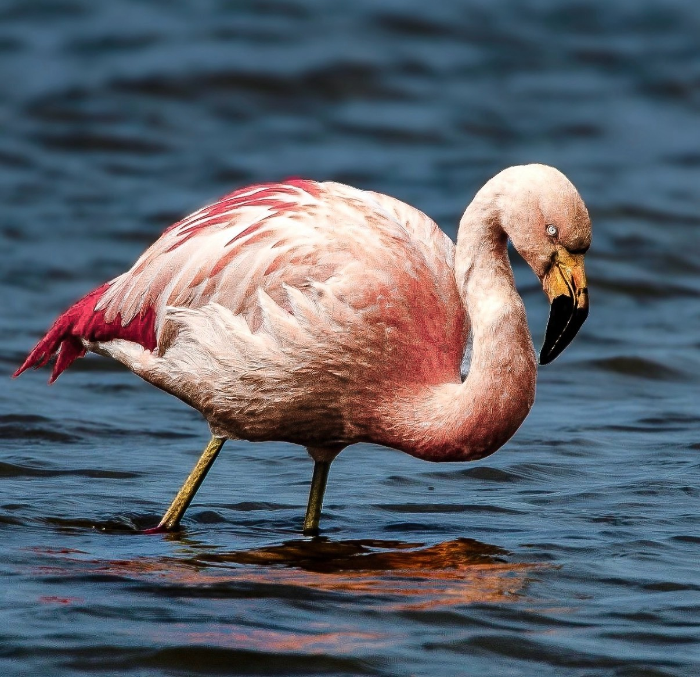
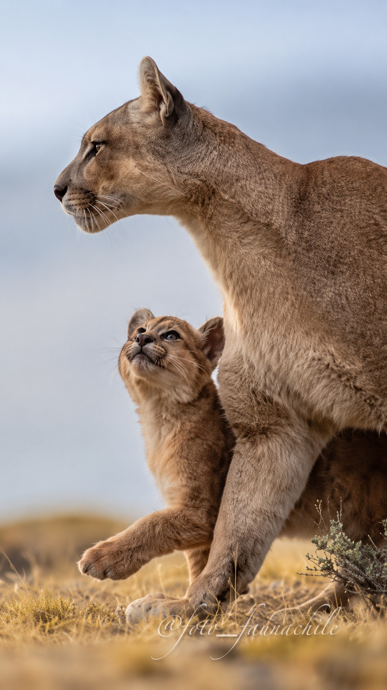
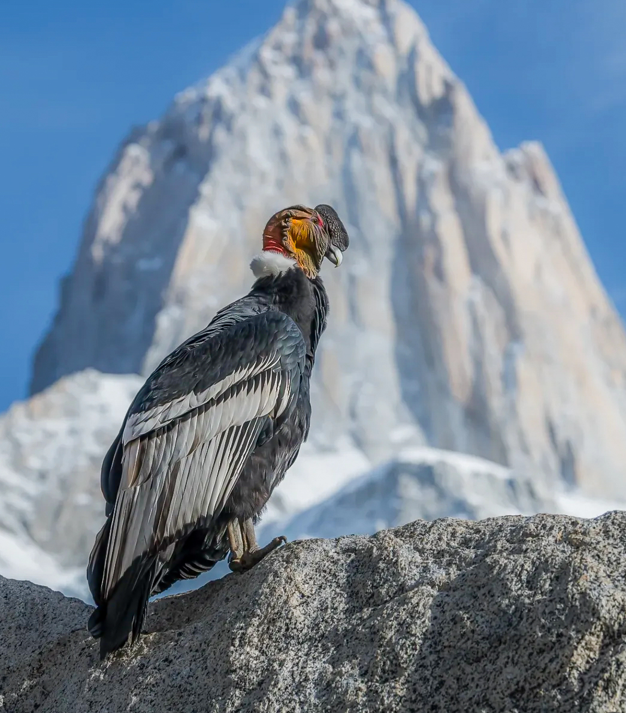
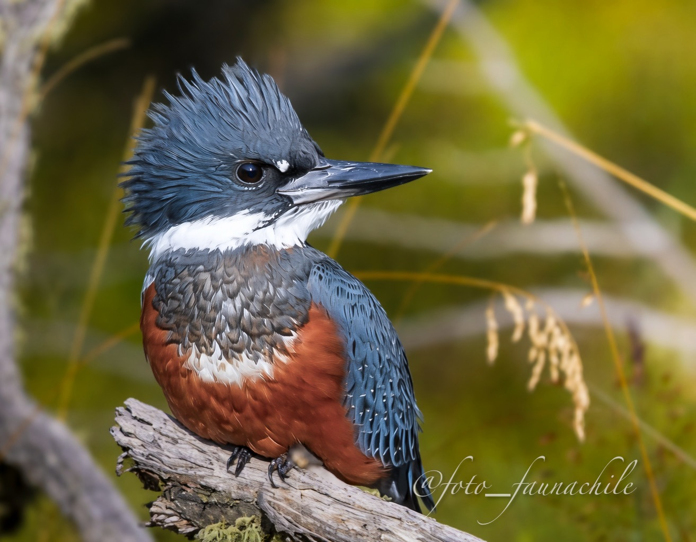

01
Flamenco Chileno
Phoenicopterus chilensis
Una silueta inconfundible que colorea los humedales australes.
Descubrir especie →PRESENTA
Cada diseño nace de la fauna de la Patagonia.
La Patagonia no solo se observa.
Cada diseño nace de una fotografía propia capturada en la Patagonia chilena y busca acercarte a las especies que inspiran la colección Patagonia Salvaje.
LAS ESPECIES SON LAS PROTAGONISTAS

Phoenicopterus chilensis
Una silueta inconfundible que colorea los humedales australes.
Descubrir especie →
Puma concolor
Una presencia silenciosa que sostiene el equilibrio natural de la Patagonia.
Descubrir especie →
Vultur gryphus
El gran planeador de los Andes y uno de los símbolos más poderosos del sur.
Descubrir especie →
Lama guanicoe
Habitante de la estepa, resistente al viento y a los grandes paisajes abiertos.
Descubrir especie →
Campephilus magellanicus
El sonido del bosque austral convertido en presencia, ritmo y memoria.
Descubrir especie →
Megaceryle torquata
Un destello azul y rojizo que acompaña ríos, lagos y costas del extremo sur.
Descubrir especie →DEL PAISAJE A LA PRENDA
El territorio donde comienza cada encuentro.
Una especie real observada y retratada.
La imagen se transforma en una obra gráfica.
La especie da vida a la colección.
El producto te devuelve a su sonido e historia.
EL PROPÓSITO
Conocer una especie es el primer paso para valorarla. Valorarla es el primer paso para protegerla.